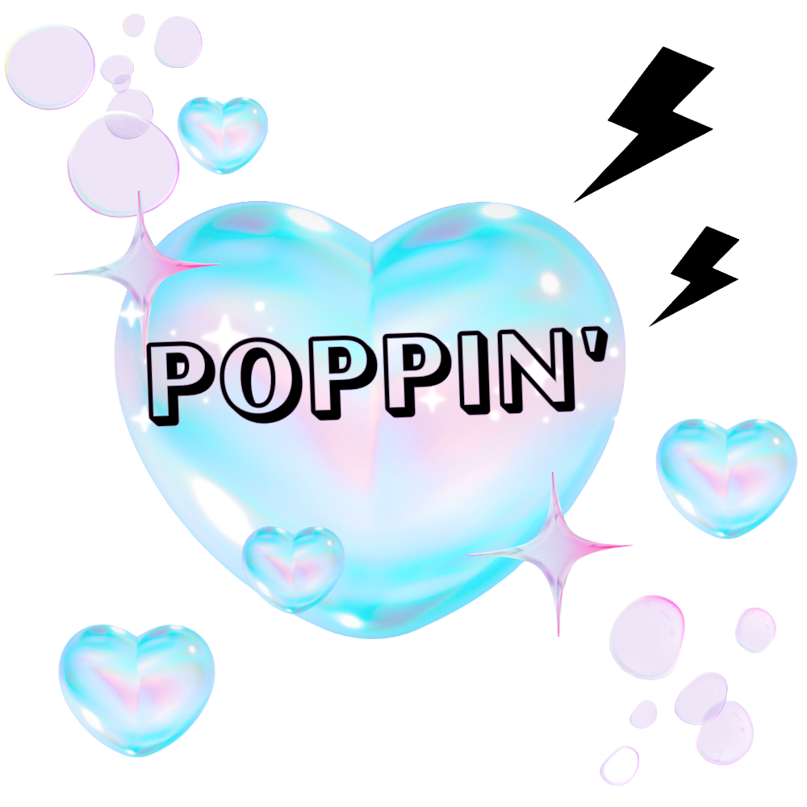

☕️ いつか、小さなお茶会を開くなら。
いつも「わくわくカプセル」に素敵なときめきを置いていってくれてありがとうございます。画面を飛び出して、みんなで好きなものを持ち寄ってゆるく喋れる小さなお茶会を、いつかリアルで企画できたらいいな…と企んでいます。その時はここで一番にお知らせしますね！

#04 News
この場所のアップデート情報や、これから仕掛けるワクワクな企みのお知らせです。
いつも「わくわくカプセル」に素敵なときめきを置いていってくれてありがとうございます。画面を飛び出して、みんなで好きなものを持ち寄ってゆるく喋れる小さなお茶会を、いつかリアルで企画できたらいいな…と企んでいます。その時はここで一番にお知らせしますね！
#02 MyーExpeditionのページに、メンバーと一緒に出かけた夜の養老渓谷の動画を埋め込みました！自然とデジタルアートが混ざり合う、胸がパチパチ弾けたお気に入りの瞬間、ぜひ覗いてみてください✨